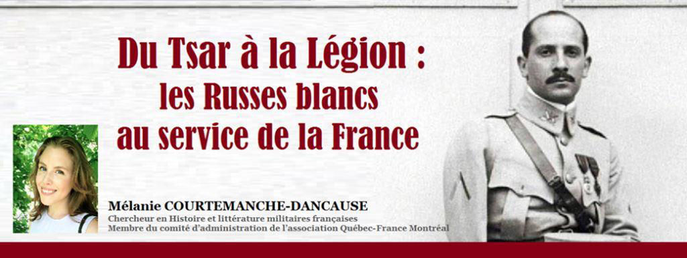
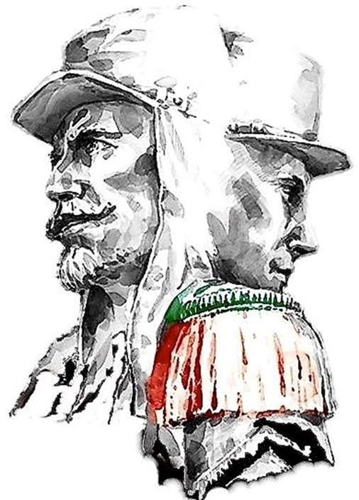
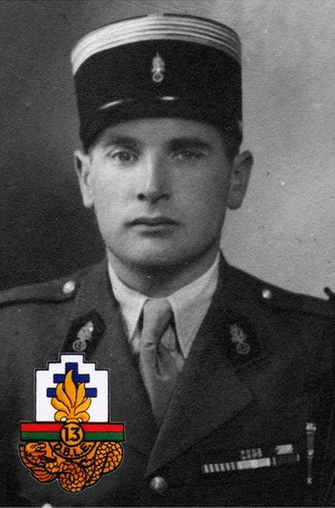
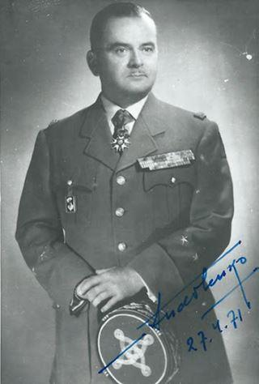
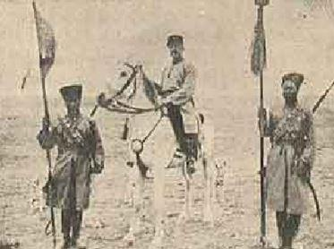
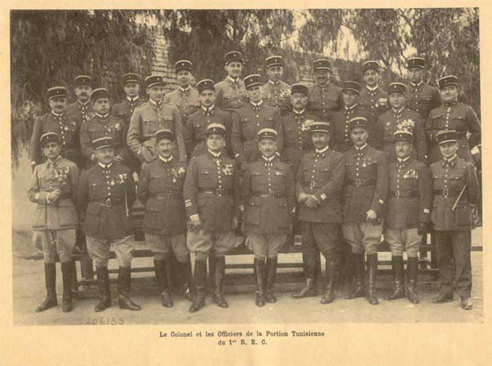
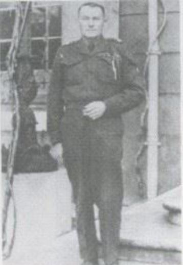
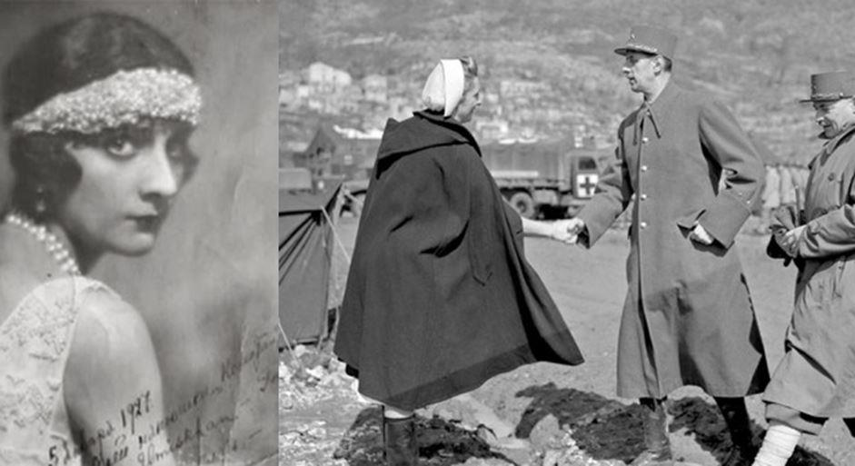

Du Tsar à la Légion : les Russes blancs au service de la France
par Mélanie COURTEMANCHE-DANCAUSE

On les appelait les Russes blancs, ceux qui, face aux communistes « rouges », avaient soutenu le tsar jusqu’au bout et désormais s’étaient exilés : de 1917 à 1922, la France devait gérer l’accueil de ces centaines de milliers de réfugiés politiques. Si plusieurs d’entre ces hommes et femmes issus de la noblesse caucasienne optèrent pour des métiers divers (couturières, mannequins, travailleurs d’usine) et bien souvent éloignés de leurs anciennes fonctions, ils étaient aussi plusieurs à vouloir servir leur patrie d’accueil par les armes. En tout, ils auront été plus de deux mille hommes à porter le célèbre képi blanc et à laisser une empreinte durable – du chant Les Cosaques à la création du 1er Régiment étranger de cavalerie –, sur l’identité collective et l’histoire de la Légion étrangère.
Le lieutenant-colonel Dimitri Amilakvari (1906-1942)1 est sans doute le plus connu de ces exilés à la Légion : issu d’une vieille lignée princière géorgienne, et bien que n’étant pas Russe (les Géorgiens firent bien comprendre qu’il ne fallait pas les confondre), sa famille étant demeurée fidèle au tsar était contrainte à l’exil et s’installa en France. Désespérant de la perte de sa terre natale, inspiré aussi par les grandes actions militaires de ses aïeux, il se chercha une vocation et la Légion la lui donna. Après être passé par Saint-Cyr, il commença sa carrière d’officier au Maroc et en Algérie avant de se porter volontaire le 20 février 1940 à la bataille de Narvik au sein de la 13e demi-brigade de la Légion étrangère. Ses raisons pour rallier la France libre ?
« Je dois tout à la France, ce n’est pas au moment où elle a besoin de moi que je l’abandonnerai ». L’audace dictera ses grandes et ses petites actions, jamais inquiet comme il l’était de frôler le danger pour donner l’exemple à ses hommes.
À la bataille de Bir-Hakeim, où les légionnaires affrontèrent à un contre dix les troupes de Rommel, il déclara à ses soldats : « Nous étrangers, n’avons qu’une seule façon de prouver à la France notre gratitude pour l’accueil qu’elle nous a réservé : nous faire tuer pour elle ». Ce fils adoptif de France, Compagnon de la Libération, trouvera la mort au champ d’honneur au devant de ses hommes, à la bataille d’El-Alamein.
Au courant de sa vie, Amilakvari aura croisé le futur général Serge Andolenko (1907-1978), un Russe de Volotchisk avec qui il avait partagé la même promotion de Saint-Cyr et se lia d’amitié. Leur histoire connaîtra une séparation – mais non pas une rupture –, lors de l’Armistice de juin 1940. Amilakvari rallia de Gaulle, et Andolenko obéit à l’Armistice un temps, avant de participer au Débarquement de Provence. Tous deux naturalisés français, leur détermination dans la fidélité démontre un attachement profond à leur patrie d’adoption – l’indifférence n’ayant pas sa place chez les grands hommes –, et c’est cet amour pour la France qui les permettra de se réunir sans rancune : la Légion étrangère garantissait ce ciment. Le général Andolenko, dans sa passion pour sa patrie d’accueil, lui dédia des ouvrages d’histoire monumentaux et servit à la Légion étrangère pendant plus de vingt ans.
On ne peut passer sous silence les destins remarquables de ces hommes mûrs qui se sont engagés en tant que simples légionnaires. Qui, autre que Boris Khrechtchatizky (~1885-1940), pourrait mieux illustrer ce type d’homme assez courageux pour tout reprendre à zéro ?
Celui-là avait déjà fait la Grande Guerre, au cours de laquelle il fut promu général de brigade au sein de l’armée impériale.
Forcé à l’exil, il s’était réfugié en France comme nombre de ses compatriotes et, dans un esprit de panache que partage l’âme russe, s’engagea à l’âge de 40 ans (quoiqu’il s’était probablement rajeuni !) au 1er Régiment étranger de cavalerie en tant que simple légionnaire. Porte-étendard le plus décoré de l’histoire de l’armée française, orné en plus de ses moustaches extravagantes, on ne pouvait s’empêcher de le remarquer. On rapporte ainsi que le maréchal Franchet d’Espèrey, lors d’une revue de ses troupes en Afrique du Nord, interpela celui qui, à l’allure noble et grave, était devenu maréchal des logis :
« - Tu faisais quoi, dans le civil ?
- Général, mon général ! »
Peu après, il fut nommé sous-lieutenant et obtint la naturalisation française. Une belle leçon d’humilité qui illustre l’esprit des Russes blancs recueillis par la France.

Le Colonel Bonnefous, Chef de corps et les officiers de la portion tunisienne du 1°REC. 1934 (au 3°Rang, premier à gauche, figure Boris Khrestchatisky)
N’oublions pas non plus le lieutenant Vladimir Serge de Kanivalsky (né en 1881), ancien lieutenant-colonel à la garde impériale, au sein de laquelle il servit lors de la Grande guerre. Il s’engagea en tant que sous-lieutenant au 1er Régiment étranger de cavalerie en 1920, fut naturalisé français en 1926, obtint le grade de lieutenant le 4 juillet 1928, néanmoins on continua de l’appeler affectueusement « mon colonel ». Il se retira de la Légion en 1936 et livra lors de ses adieux un discours mémorable qui témoignait de cet amour équestre propre à ses compatriotes : « J’aime la cavalerie. Je ne suis plus à la page parmi les engins blindés, les avions, etc. Mais, tout en m'inclinant devant le progrès, mon cœur reste fidèlement attaché au cheval. Je désire vivre à coté de vous, voir la marche toujours en avant de notre régiment qui est et sera toujours le plus beau. Il faut retenir de nos braves légionnaires tout ce qu'ils ont de bon: l'élan, le courage et l'intelligence du Français, la méthode, l'amour de l'ordre et des règlements des Allemands, l’âme militaire des vieux cosaques »2.
D’autres de ces russes à l’âme fougueuse ont voulu persévérer dans leur combat contre les bolchéviques, par des chemins différents, avant de devoir s’exiler comme leurs frères en terre de France. On ne saurait oublier Ivan Pravossoudovitch (1893-1974), qui, par les aléas de la vie, avait déjà croisé la Légion étrangère avant la Révolution russe. Ayant servi dans l’armée impériale lors de la Grande guerre, il fut détaché au Régiment de marche de la Légion étrangère, puis à l’État-Major du général Franchet d’Espèrey, période lors de laquelle on lui décerna la Croix de guerre 14-18. À l’annonce des troubles qui se produisaient dans son pays, il y retourna pour combattre les révolutionnaires, fut fait prisonnier et finalement réussi à s’évader et rejoindre la Légion, qui l’admis à titre de sous-lieutenant.
Dans des circonstances drôlement parallèles, il pu démontrer à nouveau son courage et son audace lors de la Seconde Guerre mondiale : fait prisonnier en juin 1940, il s’évada de l’oflag deux ans plus tard et réussi à rejoindre la Légion étrangère au Maroc. La Légion sera restée avec lui jusqu’au soir de sa vie, car si trente ans séparèrent l’année de sa retraite en tant que lieutenant-colonel et sa mort, il fut inhumé au carré des légionnaires à Aubagne, de retour auprès de sa famille de képis blancs.
Enfin, on ne peut raconter l’histoire des Russes blancs à la Légion étrangère sans parler de Leïla Hagondokoff, comtesse du Luart (1898-1985), et personnage éminent de la Légion étrangère. Certes, elle n’a pas servi dans ses rangs en tant que soldat, mais elle a servi autrement sans négliger sa féminité et fit preuve elle aussi d’honneur et de fidélité. Issue de la plus ancienne famille aristocratique du Caucase, fille et petite-fille de généraux, Gali, de son ancien prénom, devint infirmière durant la Grande Guerre et épousa un grand blessé.
Venue s’établir en France auprès de sa famille, divorcée et mère d’un jeune fils, elle brilla au sein de l’aristocratie française par son second mariage au comte Ladislas du Luart. Mais, les occupations mondaines la lassèrent et, animée par le désir de s’engager et de servir, elle créa par ses propres moyens un système d’ambulances chirurgicales destiné à traiter les soldats blessés au front lors de la guerre d’Espagne. En plus de financer le projet, elle part seule gérer ses ambulances et soigne elle-même les soldats en première ligne. Son système médical est une première mondiale et la Légion étrangère lui donnera d’autres occasions de mériter son surnom de « Princesse Courage ». Prise d’affection pour les légionnaires qui sont souvent sans famille ou coupés des leurs, elle les accompagnera lors de la Seconde Guerre mondiale durant les campagnes de Tunisie (à l’occasion de Noël 1943, elle distribuera les premiers cadeaux aux soldats), d’Italie (auprès du maréchal Juin), de France (auprès du maréchal de Lattre de Tassigny) et d’Allemagne.
Même une fois la guerre terminée, elle ne posa pas ses valises. Elle créa, géra, participa au fonctionnement quotidien des Centres du Luart en Algérie, accueillant les légionnaires en permission et éloignés de leurs proches. Elle s’y identifiait, car depuis la perte de son fils unique, la Légion était pour elle aussi une famille. Elle se voua donc à leur offrir confort et réconfort : les Centres comportaient une cantine (requérant les services d’un chef cuisinier pour offrir des repas raffinés), une bibliothèque, des chambres, puis des salles de repos.
On la reconnaissait, cette grande dame toujours élégante, avec ses cheveux en chignon, ses perles et le visage maquillé : les légionnaires la voyaient comme une marraine, toujours présente aux événements de la Légion, dont Noël et Camerone.
Depuis 1943, c’est qu’elle endosse officiellement ce rôle au 1er Régiment étranger de cavalerie. Plus tard, on l’honorera du titre, habituellement réservé aux maréchaux, de brigadier-chef d’honneur. Elle compta, entre autres, trois citations à l’ordre de l’Armée, la cravate de commandeur de la Légion d’honneur et la distinction de Grand Officier de l’Ordre national du mérite..
Puis, comme pour tous les autres grands personnages de la Légion, on s’est attelé à transmettre son souvenir. Elle aussi avait tout donné à cette nouvelle patrie qui l’avait accueillie et la Légion lui rendit les honneurs lors de ses funérailles aux Invalides le 29 janvier 1985, son cercueil ayant été porté par six légionnaires. La Légion continue de rendre hommage à leur marraine de diverses manières aujourd’hui.
Nous n’avons qu’esquissé le tableau des Russes blancs qui se sont engagés à la Légion étrangère. Hélas ! Nous n’avons pas parlé du capitaine Solomirsky, du général Comte Alexandre Verontzoff-Dachkoff, du sous-lieutenant de Doutiaguine, du légionnaire Georges Artemoff, du lieutenant-colonel Tchernomazenko, et tant d’autres… Une étude bien plus approfondie serait de mise afin de saisir l’ampleur de ce mouvement émigré, dont une large part s’était donnée corps et âme à la France au moyen d’un engagement bien souvent renouvelé à la Légion étrangère. Celle-ci leur a permis de se créer une vie hors du cadre de la victime persécutée et de l’éternel exilé, leur offrant une patrie et une famille, et à d’autres aussi de recommencer leur vie malgré leur âge avancé. Il est vrai que la Légion a connu plusieurs vagues de recrutement similaires au fil des conflits de par le monde : les Alsaciens-lorrains en 1870 ou les Allemands en 1946 en sont de bons exemples. Les Russes blancs y ont à leur tour apporté une fougue, la même qui étonna les troupes de Napoléon et qui s’accorde à une résilience et une élévation dans l’humilité. Si nous devons rendre hommage à cette âme russe et noble, c’est aussi reconnaître à la Légion étrangère cette intuition qui révèle les grands hommes.
M. C-D.
NOTES ET RÉFÉRENCES
1. Dimitri Amilakvari a récemment été l’objet d’une toute première biographie par Jean-Paul Huet chez Lemme Edit en 2020.
2.Propos repris dans La Légion étrangère : Histoire et dictionnaire d’André-Paul Comor et Étienne de Montety (dir), paru aux éditions Robert Laffont en 2013.
Partager cette page